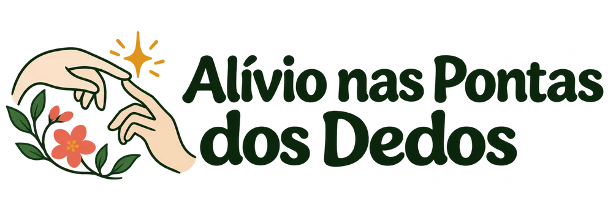
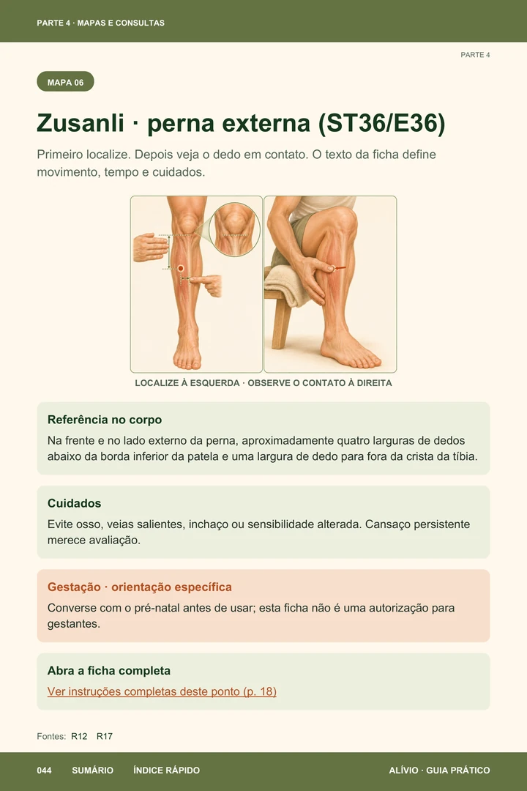
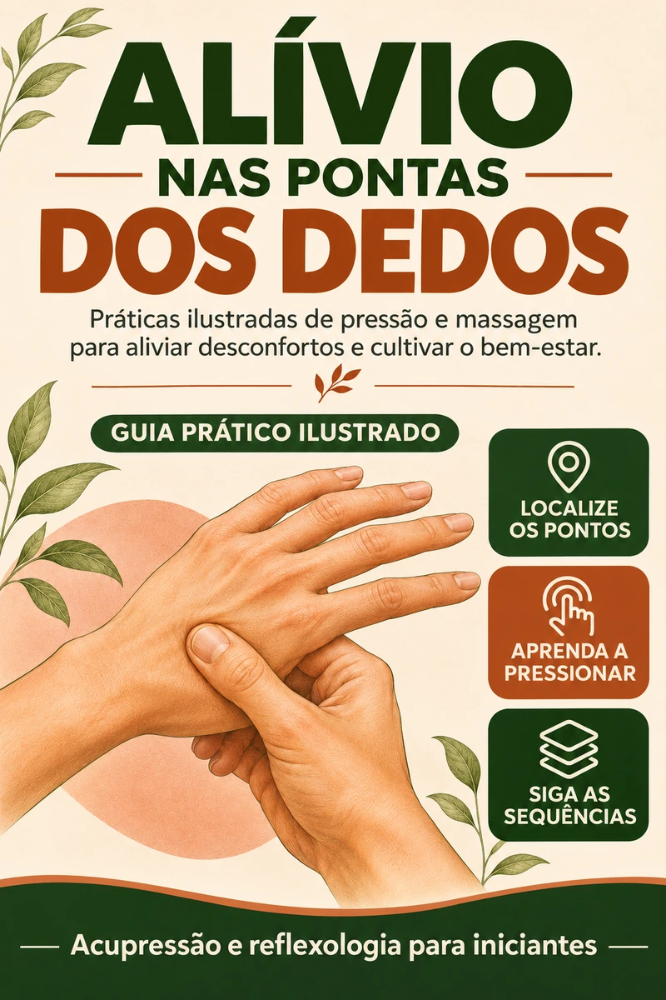
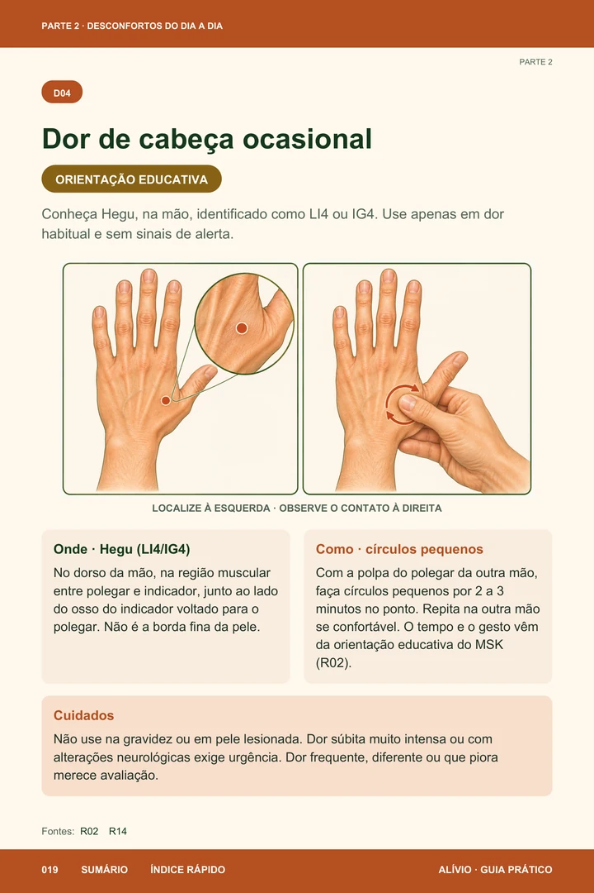
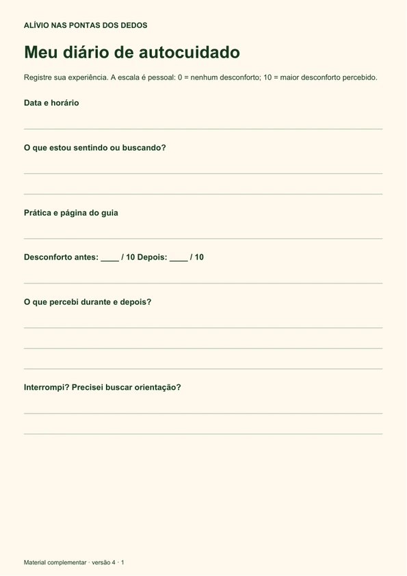
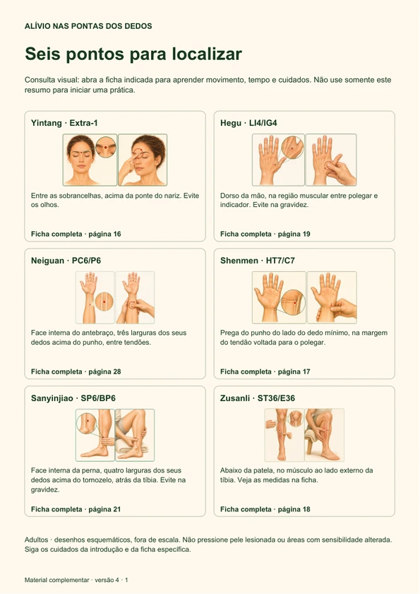
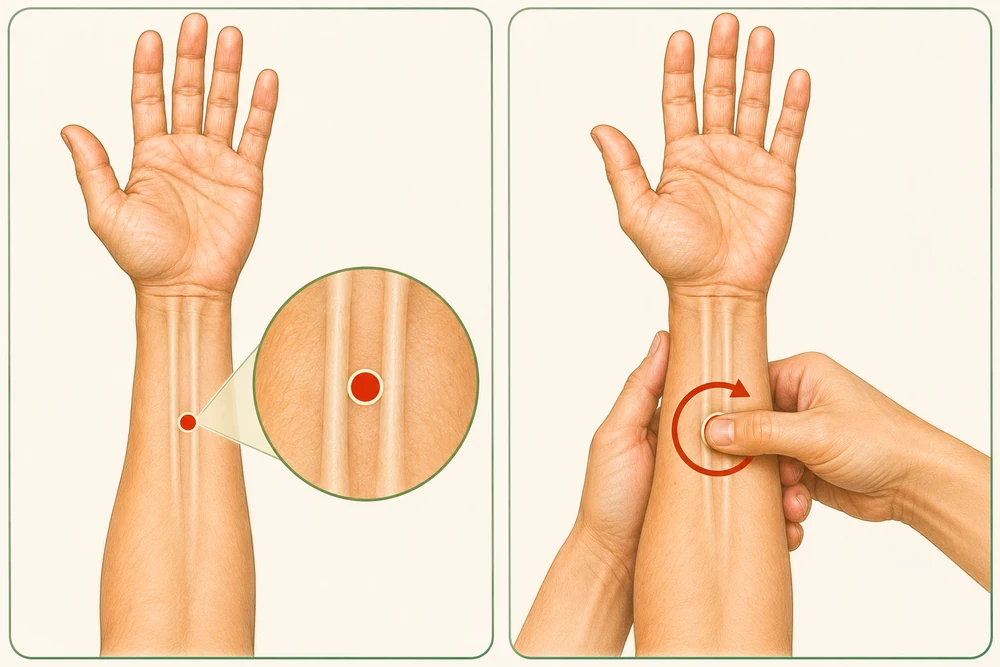

Tensão e descanso
Ansiedade e estresse, preparação para dormir e pausas para desacelerar.
Yintang · Shenmen · rotinas de conforto⚡ OFERTA ESPECIAL DISPONÍVEL APENAS HOJE
ACUPRESSÃO & REFLEXOLOGIA PARA INICIANTES

Guia ilustrado com orientações para 12 desconfortos, 6 rotinas de bem-estar e 2 bônus.
Ebook em PDF · Para adultos · Sem agulhas





Para acompanhar12 desconfortos · 6 rotinas de bem-estar · 6 pontos de acupressão
VEJA ANTES DE ESCOLHER
Folheie as páginas reais do ebook usando as setas. Toque em uma página para ampliar os desenhos, as instruções e os cuidados.
Ilustrações esquemáticas, fora de escala. Leia a ficha inteira antes de qualquer prática. O uso na gestação exige orientação individual.
UMA CONSULTA PARA CADA MOMENTO
Do desconforto cotidiano às pausas de bem-estar. Escolha um assunto, leia os cuidados e consulte a ficha indicada.
Ansiedade e estresse, preparação para dormir e pausas para desacelerar.
Yintang · Shenmen · rotinas de confortoHegu para dor de cabeça ocasional e orientação de massagem externa da face.
Localização · gesto · cuidados específicosZusanli e um roteiro para observar o corpo antes de começar o dia.
Sem promessa de energia imediataConheça o protocolo de Sanyinjiao estudado para cólicas menstruais primárias.
Com limites de uso e restrição na gestaçãoPráticas de contato leve para criar uma pausa de conforto local na rotina.
Toque suave · reflexologia · atenção ao corpoFicha de Neiguan e cuidados próprios para gestação, quimioterapia e pós-operatório.
Nesses contextos, siga a equipe responsávelAnsiedade e estresse; dificuldade para relaxar e dormir; cansaço e falta de disposição; dor de cabeça ocasional; TPM e cólicas menstruais; tensão nos ombros e músculos; mãos e antebraços cansados; pés cansados; tensão na face e mandíbula; náuseas após quimioterapia ou cirurgia; enjoo na gravidez; náusea com desconforto digestivo.
Preparar-se para uma tarefa; começar o dia com atenção; desacelerar ao fim do dia; preparar o corpo para dormir; ritual de cuidado para as mãos; ritual de cuidado para os pés.
Na gestação, no pós-operatório ou durante tratamento oncológico, siga a equipe responsável. Leia os cuidados de cada prática e não altere medicamentos por causa do guia.
Introdução à medicina chinesa · Nomes e códigos dos pontos · Mapas de consulta · Glossário e referências

LOCALIZAÇÃO + CONTATO • ILUSTRAÇÃO DO EBOOKDETALHES QUE FAZEM DIFERENÇA
Uma sequência consistente para acompanhar as fichas.
O texto distingue protocolo estudado, orientação educativa e rotina de conforto.
Sumário, índice rápido e referências cruzadas com links para encontrar a página certa.
ACOMPANHAM O SEU EBOOK
Arquivos separados em formato A4, para imprimir e usar junto com o guia. Já fazem parte do material.
Anote como estava antes e depois, a prática escolhida e o que percebeu. Inclui uma tabela de observação para a semana.
Incluído no ebookUma visão dos seis pontos em destaque, com localização resumida e a página correspondente no guia.
Incluído no ebookPARA VOCÊ COMEÇAR BEM
O guia foi pensado para adultos iniciantes que procuram uma consulta visual e práticas complementares de autocuidado, no próprio ritmo.
Sintomas intensos, novos ou persistentes merecem avaliação. O ebook não é destinado a bebês ou crianças.
TENHA O GUIA POR PERTO
Sem calendário obrigatório ou desafio com prazo. Entenda a proposta, escolha uma ficha e observe a sua experiência.
Acupressão e reflexologia
para iniciantes
R$ 29,90
Ebook + 2 bônus
Checkout seguro · Acesso digital pela Hotmart
Se não ficar satisfeito, solicite o reembolso dentro do prazo pela Hotmart.
DEPOIMENTOS
“Sofria de insônia crônica e tive uma melhora muito grande depois que comecei a fazer as práticas.”
“Comprei o material porque sofria de enxaqueca. A dor era tanta que só conseguia ficar no meu quarto escuro. Depois que comecei a praticar a acupressão, meu incômodo diminuiu muito.”
“Sempre gostei de práticas holísticas e uso a acupressão e a reflexologia como meio para ter uma qualidade de vida melhor.”
Relatos individuais. Os resultados variam e não representam garantia de benefício. O material não substitui avaliação ou tratamento profissional.
DÚVIDAS FREQUENTES
Mais clareza para escolher e usar o material.
Não. O guia começa pela introdução à medicina chinesa, explica os nomes e códigos dos pontos e mostra como ler os desenhos antes das fichas práticas.
As práticas deste ebook usam contato manual com os dedos. O material não ensina aplicação de agulhas.
O ebook em PDF com orientações para 12 desconfortos, 6 rotinas de bem-estar, fichas e mapas de 6 pontos de acupressão. Você também recebe dois bônus para imprimir: Diário de autocuidado e Seis pontos para consultar.
Não. É um produto digital em PDF. Após a compra, siga as instruções da Hotmart para acessar os arquivos. Você pode ler em uma tela ou imprimir para uso pessoal.
Essas situações exigem orientação individual. Há pontos que não devem ser usados na gestação e cuidados próprios para acessos, pele sensibilizada, cirurgia e quimioterapia. Leia as restrições e converse com a equipe responsável antes de praticar.
Não há garantia de resultado individual. É um material educativo de autocuidado complementar; não substitui avaliação, diagnóstico ou tratamento profissional e não orienta alterar medicamentos.
Não há programa obrigatório. As fichas têm indicações e cuidados próprios, e as rotinas de bem-estar podem ser consultadas conforme seu momento. Não combine protocolos para acelerar resultados.
O ebook com os dois bônus custa R$ 29,90. Clique no botão de compra para abrir o checkout da Hotmart e conferir as condições e formas de pagamento disponíveis.